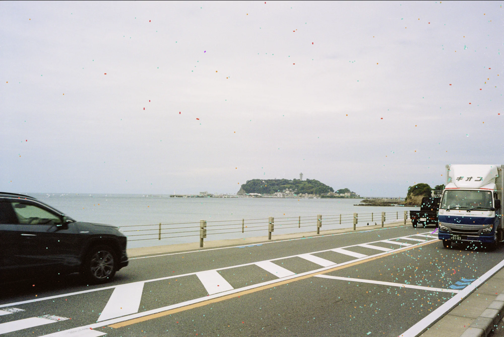

자동
사진 전체에서 결함을 찾고 복원합니다.
결함 복원
GrainMend RGB는 적외선 채널 없이도 먼지, 핀홀, 스크래치와 유제 손상을 찾아 복원하는 독자 개발 소프트웨어 방식입니다.
GrainMend RGB
가이드·브러시·자동 모드는 모두 Mac에서 로컬로 처리됩니다. 처리 시간은 사진 크기, 선택 영역과 Mac에 따라 달라집니다.

사진 전체에서 결함을 찾고 복원합니다.
사용자가 지정한 영역 안에서 결함을 찾습니다.
복원할 자리를 직접 칠합니다.
지정한 위치의 픽셀을 다른 곳에 복제합니다.
GrainMend RGB는 적외선 채널 없이 RGB 이미지에서 결함 후보를 찾습니다. 복잡한 무늬에서는 오검출이 생길 수 있어 마스크와 복원 결과를 직접 확인할 수 있습니다.
검출 마스크와 복원 결과를 사람이 직접 확인하고, 필요한 영역을 다시 고칠 수 있습니다.
각 GrainMend RGB 레이어는 강도를 조절하고 마스크를 확인하거나, 따로 끄고 지울 수 있습니다.
오검출이 생길 가능성이 높으면 사용자에게 알립니다.
GrainMend IR은 스캐너 플러그인이 적외선 채널을 제공할 때 선택할 수 있는 보조 방식입니다. IR 검출 결과는 GrainMend RGB와 같은 편집 기록에 추가됩니다.
GrainMend RGB는 하드웨어 적외선 클리닝과 별개로 독자 개발한 소프트웨어 방식입니다. GrainMend IR은 스캐너의 적외선 채널을 사용하지만 Digital ICE, iSRD 또는 SRDx의 구현이나 호환 모드가 아닙니다.